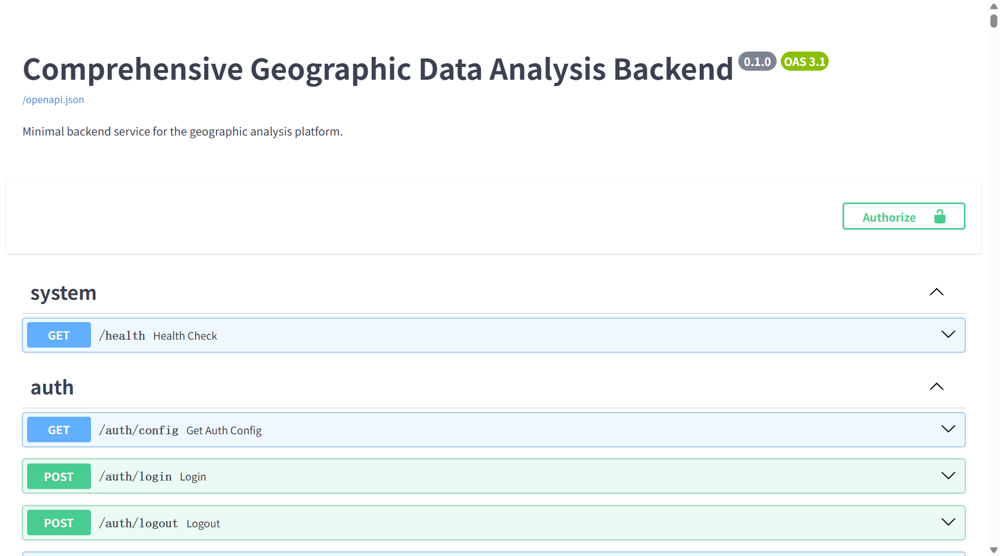
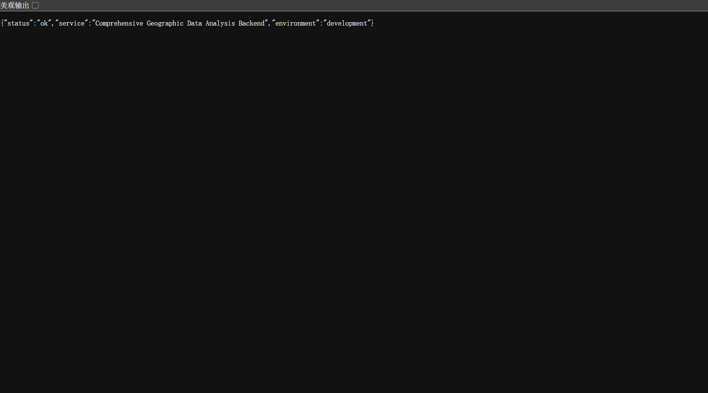

/docs：标题 "Comprehensive Geographic Data Analysis Backend"（v0.1.0，OAS 3.1），按 system / auth / geo / workflow / analysis / data-io / workflow-definition / workflow-timer 等分组展示接口列表。| 接口分组 | 接口数 | 说明 |
|---|---|---|
| config | 63 | 系统配置 / API Key / GEE / 天气源 / 远程存储 |
| data-io | 38 | 数据导入 / 缓存 / 数据集注册 |
| workflow-definition | 18 | 工作流定义管理 |
| auth | 15 | 登录 / 账户 / 个人 Token |
| runtime | 12 | 运行时状态 / 资源监控 |
| weather | 10 | 天气引擎 / 天气瓦片 |
| workflow-timer | 9 | 工作流定时器 |
| workflow | 8 | 工作流运行 / 事件 / 结果 |
| import | 7 | 栅格 / 矢量导入 |
| cleanup / overlay / algorithm / gee / analysis / catalog / provider / artifacts / tiles 等 | 35 | 其余业务分组 |

http://127.0.0.1:8000/health，返回 {"status":"ok","service":"Comprehensive Geographic Data Analysis Backend","environment":"development"}。日志文件：I:\Geograph_DataSet\_runtime\logs\backend.log（最近 25 条见下）。
产品入库以图层目录为登记真源（catalog_seeds/layer_descriptors.json），共注册 38 项产品，覆盖土壤水分产品、参考数据、反演产品、气象辅助等类别。
| 产品 ID | 显示名称 | 类别 |
|---|---|---|
| ref-smap-sm-202512-l3 | SMAP L3 土壤水分 | research-group |
| ref-ddca-sm-201504-202512 | DDCA 土壤水分 | research-group |
| prod-fy_smap_station-sm_vod_omega-202512-fusion | 多源融合土壤水分 | research-group |
| method-smap-omega-doy-dynamic | SMAP 动态 ω 反演 | research-group |
| method-fy-omega-doy-dynamic | 风云卫星 动态 ω 反演 | research-group |
| lab-output | 项目土壤水分反演结果（样例） | research-group |
| obs-station-sm-daily | 站点土壤水分 | research-group |
| aridity-cn | 干旱指数 AI | climate |
| era5-dwaa-cn | ERA5 白天热浪 | climate |
| ndvi | 植被指数 NDVI | vegetation |
产品生成/入库由工作流运行驱动，记录于 SQLite 表 workflow_runs（I:\Geograph_DataSet\_runtime\workflow_state\workflow_state.sqlite3）。
| 图层/产品 | 成功次数 | 说明 |
|---|---|---|
| wind-field | 497 | 风场产品（天气工作流） |
| temperature | 151 | 温度产品 |
| visibility / humidity / pressure / precipitation | 144 × 4 | 能见度 / 湿度 / 气压 / 降水产品 |
| lab-output | 47 | 项目土壤水分反演结果（样例） |
| omega-sf-fenkuai | 44 | ω 反演分块产品 |
| method-smap-omega-doy-dynamic | 3 | SMAP 动态 ω 反演 |
| omega-sf-fenkuai-fy-online / smap-online | 3 / 1 | FY / SMAP 在线反演 |
| omega-avg-daily | 2 | 日均 ω 反演 |
| method-fy-omega-doy-dynamic | 1 | 风云动态 ω 反演 |
产品入库后的实际数据文件位于数据根 I:\Geograph_DataSet，共 13192 个文件（约 78.3 GB）。
| 产品目录 | 典型文件 | 说明 |
|---|---|---|
| Soil_Moisture/CustomNC_SM_CalData | Processed_SM_20251201.nc … | 逐日土壤水分 NetCDF（约 200 MB/日） |
| Soil_Moisture/DDCA | SM_ch_m_2015.mat … | DDCA 土壤水分 MAT 产品 |
| Inversion_Results/omega_block | omega_block_20251203_20251231.mat、daily_omega/*.mat | ω 反演分块与逐日产品 |
| Inversion_Results/fy_avg | doy_025.mat … | FY 日均 ω 反演产品 |
| ProjectOutput/2023-01_Omega_Inversion | SMAP_L3_SM_P_*.mat、smap_sm_overlay.tif/png | SMAP L3 土壤水分与叠加图 |
产品入库记录由导出脚本生成，运行输出如下：
数据根目录为 I:\Geograph_DataSet（课题组数据磁盘），当前部署环境未挂载该磁盘，但已随系统部署核心数据；其余数据以磁盘现有数据为准，另有大量在线数据源支撑实时与开放数据接入。以下说明以图层目录（catalog_seeds/layer_descriptors.json，38 项）为准，天气产出图层（wind-field / temperature / visibility / humidity / pressure / precipitation 等全英文产出图层）不在此列。
| 分层 | 数量 | 说明 |
|---|---|---|
| 核心数据 | 28 | 风云卫星、NDVI、SMAP、Ω 数据、VOD、各种静态数据、DEM，随部署环境提供 |
| 扩展数据 | 10 | 站点观测、DDCA、干旱指数、降水、热浪、CO₂ 等气候/观测数据，磁盘已有 |
| 在线数据源 | — | 天气（Open-Meteo 等）、底图（天地图等）、开放数据（NSMC/GEE/NASA/NSIDC 等） |
按数据族划分，均为研究组核心数据，部署环境确定提供。
| 数据族 | 对应图层 | 数据源 |
|---|---|---|
| 风云卫星 | ref-fy-tb-202512-mwri、method-fy-omega-doy-dynamic、method-fy-omega-doy-avg、fy-omega-inversion | 风云三号 MWRI 微波成像仪多波段亮温（NSMC） |
| NDVI | ndvi、smap-aux-vi-qa | VIIRS 逐月 NDVI（NOAA/NESDIS）、SMAP 辅助 NDVI 均值 |
| SMAP | ref-smap-sm-202512-l3、method-smap-omega-doy-dynamic、method-smap-omega-doy-avg、smap-omega-inversion、soil-moisture | SMAP L3 土壤水分（NASA NSIDC） |
| Ω 数据 | method-smap-omega-doy-dynamic、method-fy-omega-doy-dynamic、method-smap-omega-doy-avg、method-fy-omega-doy-avg、fy-omega-inversion、smap-omega-inversion | ω 反演产品（D1→D2 链路 / SF 块反演） |
| VOD | prod-fy_smap_station-sm_vod_omega-202512-fusion | SMAP/FY-3D/站点融合 SM·VOD·ω（2025-12） |
| 静态数据 | smap-aux-*（9 项）、forest-ratio、landscape-metrics-9km、biomass-cn、landcover-cn、clcd-cn、hfp-cn | SMAP 辅助库（反照率/容重/砂粒/B/粘粒/H/IGBP/柯本/NDVI）、森林覆盖率、景观指数、ESA CCI 生物量、MODIS/CLCD 土地覆盖、HFP |
| DEM | dem-etopo、gebco-dem-cn | NOAA ETOPO1/2022、GEBCO 2024 |
磁盘 I:\Geograph_DataSet 已具备，部署环境视情况提供。
| 图层 | 数据源 |
|---|---|
| obs-station-sm-daily | ISMN/CASMOS 站点逐日土壤湿度观测 |
| ref-ddca-sm-201504-202512 | DDCA 双通道算法土壤水分参考 |
| aridity-cn | 干旱指数 AI（P/PET，MSWEP/GLEAM） |
| gpcp-precip-ts | GPCP V3.2 月降水 |
| cmfd-precip-cn | CMFD 中国区域格点降水 |
| era5-dwaa-cn / era5-wdaa-cn | ERA5 白天/夜间热浪事件（SMCI） |
| co2-cn | GOSAT 中层 CO₂ 柱浓度 |
| precipitation-static / era5-hazard-events | 历史降水 / ERA5 灾害事件合集 |
系统大量使用在线数据源，覆盖天气、底图与开放数据三类。
| 类别 | 在线源 | 用途 |
|---|---|---|
| 天气 | Open-Meteo（含本地镜像 :8080）、OpenWeatherMap、WeatherAPI.com | 温度/风场/能见度/湿度/气压/降水等实时天气产品 |
| 底图 | 天地图、高德、百度、Esri、OSM、Bing、CARTO、OpenTopoMap | 矢量/影像/地形/注记底图（天地图/百度需 API Key） |
| 开放数据 | NSMC（风云亮温）、GEE（NDVI）、NASA Earthdata（NDVI/SMAP）、NSIDC（SMAP）、NOAA NOMADS（GRIB）、ESA Copernicus、GLDAS GES DISC | 在线拉取与开放数据接入工作流 |
完整数据源与可用性字段见 assets/layer_catalog.csv（新增 data_source / availability / source_type 三列）与 assets/data_availability.json。
| 图层 ID | 显示名称 | 数据源 | 可用性 | 类型 |
|---|---|---|---|---|
| ndvi | 植被指数 NDVI | VIIRS 逐月 NDVI（NOAA/NESDIS） | 核心 | 卫星遥感 |
| biomass-cn | 地上生物量 AGB | ESA CCI BIOMASS L4 AGB（2020） | 核心 | 静态辅助 |
| landcover-cn | MODIS 土地覆盖 | MODIS MCD12Q1（IGBP 17 类） | 核心 | 静态辅助 |
| clcd-cn | CLCD 土地利用 | 武汉大学 CLCD（30m 年度） | 核心 | 静态辅助 |
| hfp-cn | 人类足迹指数 HFP | HFP（WCS/SEDAC，2018） | 核心 | 静态辅助 |
| dem-etopo | ETOPO 地形高程 | NOAA ETOPO1/2022（60s） | 核心 | 地形 |
| gebco-dem-cn | GEBCO 海底地形 | GEBCO 2024（15 角秒） | 核心 | 地形 |
| ref-smap-sm-202512-l3 | SMAP L3 土壤水分 | SMAP L3（NASA NSIDC，2025-12） | 核心 | 卫星遥感 |
| prod-fy_smap_station-sm_vod_omega-202512-fusion | 多源融合土壤水分 | SMAP/FY/站点融合 SM·VOD·ω | 核心 | 融合产品 |
| ref-fy-tb-202512-mwri | FY-3 MWRI 亮温 | 风云三号 MWRI 亮温（NSMC） | 核心 | 卫星遥感 |
| obs-station-sm-daily | 站点土壤水分 | ISMN/CASMOS 站点观测 | 扩展 | 站点观测 |
| ref-ddca-sm-201504-202512 | DDCA 土壤水分 | DDCA 双通道算法参考 | 扩展 | 反演参考 |
| forest-ratio | 森林覆盖率 | 森林覆盖率 9km（2020） | 核心 | 静态辅助 |
| landscape-metrics-9km | 景观多样性 SHDI | 景观指数 9km（2020） | 核心 | 静态辅助 |
| aridity-cn | 干旱指数 AI | AI（P/PET，MSWEP/GLEAM） | 扩展 | 气候产品 |
| gpcp-precip-ts | GPCP 月降水 | GPCP V3.2 月降水 | 扩展 | 气候产品 |
| cmfd-precip-cn | CMFD 区域降水 | CMFD 区域降水 | 扩展 | 气候产品 |
| era5-dwaa-cn | ERA5 白天热浪 | ERA5 DWAA（SMCI，2020） | 扩展 | 气候产品 |
| era5-wdaa-cn | ERA5 夜间热浪 | ERA5 WDAA（SMCI，2020） | 扩展 | 气候产品 |
| co2-cn | GOSAT CO₂ 柱浓度 | GOSAT 中层 CO₂ | 扩展 | 卫星遥感 |
| method-smap-omega-doy-dynamic | SMAP 动态 ω 反演 | SMAP 亮温+辅助 → SM/VOD/ω | 核心 | 反演产品 |
| method-fy-omega-doy-dynamic | 风云卫星 动态 ω 反演 | FY 亮温+SMAP 辅助 → SM/VOD/ω | 核心 | 反演产品 |
| method-smap-omega-doy-avg | SMAP 日均 ω 反演 | D1→D2 日均 ω 反演 | 核心 | 反演产品 |
| method-fy-omega-doy-avg | 风云卫星 日均 ω 反演 | D1→D2 日均 ω 反演 | 核心 | 反演产品 |
| smap-aux-albedo | 反照率 | SMAP 辅助：反照率 | 核心 | 静态辅助 |
| smap-aux-bd | 土壤容重 | SMAP 辅助：土壤容重 | 核心 | 静态辅助 |
| smap-aux-sf | 砂粒分数 | SMAP 辅助：砂粒分数 | 核心 | 静态辅助 |
| smap-aux-b | B 参数 | SMAP 辅助：B 参数 | 核心 | 静态辅助 |
| smap-aux-cf | 粘粒分数 | SMAP 辅助：粘粒分数 | 核心 | 静态辅助 |
| smap-aux-h | 粗糙度参数 H | SMAP 辅助：粗糙度 H | 核心 | 静态辅助 |
| smap-aux-igbp | IGBP 土地覆盖 (9km) | SMAP 辅助：IGBP 分类 | 核心 | 静态辅助 |
| smap-aux-koppen | 柯本气候分类 | SMAP 辅助：柯本分类 | 核心 | 静态辅助 |
| smap-aux-vi-qa | 植被指数 NDVI 均值 | SMAP 辅助：NDVI 均值 | 核心 | 静态辅助 |
| soil-moisture | 土壤湿度 | 土壤湿度合集（多源） | 核心 | 合集 |
| precipitation-static | 历史降水 | 历史降水合集（GPCP/CMFD） | 扩展 | 合集 |
| era5-hazard-events | ERA5 灾害事件 | ERA5 灾害合集（热浪） | 扩展 | 合集 |
| fy-omega-inversion | 风云 ω 反演 | 风云 ω 反演合集 | 核心 | 合集 |
| smap-omega-inversion | SMAP ω 反演 | SMAP ω 反演合集 | 核心 | 合集 |